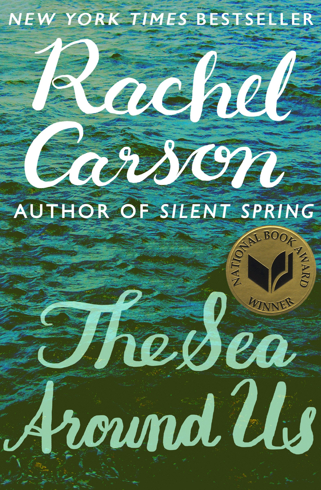

Early Life and Education
Rachel Carson was born on May 27, 1907 in Springdale, Pennsylvania. At a young age, she was already an avid reader and she began writing her own stories at eight years old. At ten years old, she already had her first story published. Throughout her teenage years, she was influenced by her mother's life long love of nature and the living world and grew to have her own interest in novels about the natural world and the ocean. After graduating high school, Rachel attended Pennsylvania College for Women known today as Chatham University and studied English. She later switched her major to biology but continued to write for the student newspaper. She was later accepted to Johns Hopkins University in 1928 for her graduate studies but was unable to attend due to financial difficulties. She later took a summer course at the Marine Biological Laboratory and continued her studies in zoology and genetics at Johns Hopkins University. She ended up receiving her MA in zoology from the university in 1932.

Career
After graduating college, Rachel was hired by the U.S Bureau of Fisheries to write radio scripts. She was only the second woman to have been hired by the Bureau. Her main job was to analyze and report data on fish populations. Her work allowed her to often visit Chesapeake Bay where she toured commercial plants and conservation facilities. Carson published her first book , Under the Sea-Wind, in 1941. There, she discovered her ability to present complex scientific topics clearly in a way that captivated her readers. In 1943, Carson was promoted to an aquatic biologist in the U.S. Fish and Wildlife Service where she wrote many articles that were meant for the American public. Series such as “Food from the Sea” and “Conservation in Action” provided information on the health benefits and how to properly prepare fish and shellfish. In 1952, she wrote her second book, The Sea Around Us which was wildly successful. Translated into 32 languages, it was on the New York Times’ best seller list for 81 weeks. Due to the success of the book, Carson resigned from the Fish and Wildlife service to spend more time on writing. Her third book, The Edge of the Sea fostered the new perspective of ecology which had not existed beforehand. However, it was her final book, Silent Spring, that spurred concern for the true damage being done to the ecosystem by pesticides. She was particularly concerned about the use of DDT which was introduced in 1945. Being a biologist, she was able to see the early effects of DDT on fish and wildlife and was able to see the impending danger DDt would have on the rest of the environment. With the help of a few others who also worked at the Fish and Wildlife Service, Carson wrote Silent Spring and provided documentation on the effects of DDT that were not well known by the public. The book sparked massive controversy and also personal attacks on herself, especially from the pesticide industry trying to discredit her. However, their efforts were in vain as the federal government ordered a review on how pesticides were used and asked Carson to testify. As a result of this review, DDT was banned and along with that, there was now more scrutiny into general concern for the environment. Silent Spring is credited to sparking the environmental movement that eventually led to the creation of the Environmental Protection Agency.
Publications
-
Silent Spring
Silent spring details the damaging effects of pesticides and how they do not only target pests exclusively, but can also harm people without direct exposure. Carson suggests that we need more education and other more environmentally friendly ways to protect crops.
-

The Sea Around Us
Book summary here adfadsfasdfsafdsafdfadfsafsafdadsfsaf
-
The Edge of the Sea
Book summary here adfsafdaesfasdfasfaefaeferqeqterfdafdsfa